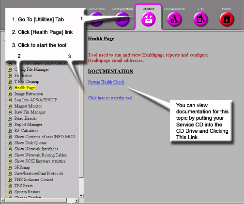
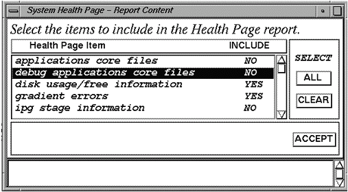
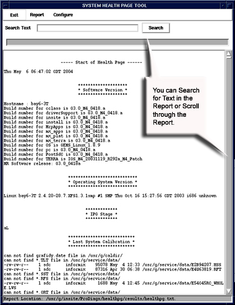

Operating Documentation
Direction 5133330-3, Rev# 14
Signa EXCITE HD 3.0T Service Methods
Module Version 1.0, Version Date 4/25/07
Operating Documentation |
| Last Update | 06/01/2006 |
System Health tool, sys_health, checks the existence, validity, and consistency of selected fields in system configuration and calibration files. Check status, along with field values, are displayed on the screen and in an output file named system_health.log in the /usr/g/service/log directory. The tool is used to identify possible configuration file corruptions, incorrect parameter settings, bad or missing calibration procedures, and calibration failures. Since it serves to identify and isolate possible problems and eliminate redundancy in the calibration process, the sys_health tool helps shorten the length of a troubleshooting session and provides the operator with a quick summary of the system health.
Section 1, Running the Tool From a Command Line.
Section 2, Running the Tool From the Service Browser.
Be sure service key is inserted. Perform a TPS reset.
Select the C-shell from the Service Desktop. Type the following in the C-Shell window: cd /usr/g/service/cclass and press <Enter>.
Type: sys_health -nf -ns -notns -asc<Enter>.
Once the tool is started, it generates status output to the screen and to an output file named system_health.log, located in the /usr/g/service/log directory until a fatal error is encountered (if the option keys <-nf> are not used) or when the end of the tool is reached.
See Section 6 for Advanced System Health commands
| NOTE: | It may take several minutes before any results are displayed. |
| NOTE: | If a system_health.log file already exists, it will be copied to *.log.bkup when sys_health is initiated. Consequently, two versions of the log may be kept–the current one and a *.bkup one. |
Illustration 1: Starting the Health Page

To start System Health Tool, at the host computer, go to the Service Desktop. Start the Service Browser, if it is not already running, by clicking the [Service Browser] button on the left side of the screen. Refer to Illustration 1.
Starting the tool will bring up the System Health tool. Refer to Illustration 2 .
To run the a regular pass of system health, click on [Configure] and if it is available, select [Enable Health Page]. To run any variation of the other system health, make a selection based on the options in the [Configure] and [Report] windows (see step 4, Illustration 2 and Table 1).
Click on [Report] and select [Full Report] (or for any other variation of System Health, (see step 4, Illustration 2 and Table 1).
Menu items at the top of the window represent the controls available for this tool.
[Exit] closes the System Health Window.
[Report] opens a menu of three items:
[Custom Report] generates a report that is a subset of a full report. This subset is set up in the [Configure] pull-down menu.
[Full Report] gives a report of all items System Health is designed to look at.
[Last Report] displays the last System Health report generated. You can also view the last report run from the Service Browser. See Section 4.
Illustration 2: System Health Tool

| NOTE: | Reports will take several minutes to run. |
Clicking [Custom] opens a menu of four items:
Table 1: System Health Tool Custom Menu
| Enable/Disable Health Page | This is a toggle selection. Which state appears when you open the menu is the current state of Health Page. Click the entry to change it. |
| Edit Schedule | System Health can be set to automatically run on a periodic basis. See Illustration 2-3. Specific dates can be set up or a routine run set up to run on a regular basis. If e-mail addresses are set up, reports can be automatically sent to those addresses. |
| Edit E-Mail Addresses | E-mail addresses can be added to System Health to e-mail result files. See Illustration 4. |
| Edit Report Content | Use this tool to modify the checks that System Health makes. See Illustration 5. Click the [Select All] button (which is the default) to select everything. Or click the [Clear] button to change Include to [No] and then double-click the entries for which you want to change Include to [Yes]. Click the [Accept] button when done. |
Illustration 3: Auto Report Setup

Illustration 4: Edit E-Mail Addresses

Illustration 5: System Health Report Content

To toggle the “Include field between “Yes” and “No”, double click on the item.
The output (system_health.log) file can be displayed in a C-Shell by typing:
cd /usr/g/service/log and press <Enter>
|more system_health.log and press <Enter>
Press the <Spacebar> to view additional information until the end of the file is reached. Refer to sample System Health output.
To view the last System Health that was run on the system, go to the Error Log tab of the Service Browser. See Illustration 6.
Illustration 6: Accessing the Health Page Log

Illustration 7: System Health Page

The sys_health software determines the software revision on the current system by invoking the <getver> command.
The sys_health software determines which system device is emulated by reading the mgd_stage file in the /usr/g/w/config directory. It extracts the line which starts with <a>. Each letter on that line indicates a device mode or status. See Table 2.
Table 2: MGD_STAGE File Emulation Codes
| A | Emulate PAC |
| B | Emulate system monitoring |
| C | Emulate IWS-PC |
| D | Emulate T/R driver |
| E | Emulate CAN T/R driver |
| F | Emulate IRF |
| G | Emulate gradient amp |
| H | Emulate RF amp |
| I | Emulate power monitor |
| J | Emulate CAN network |
| K | Emulate CAN RIF-DIF DSP's |
| L | Emulate TNS |
| M | Emulate entire MDS |
| O | Disable reporting of gradient overloads |
| Q | Emulate the peripheral pulse signal from the PAC |
| R | Emulate SRI |
| S | Emulate bore wall temperature sensor |
| T | Emulate table |
| V | Emulate vacuum monitor |
| W | Disable watchdogging |
| w* | Emulate WHOLE BODY gradient of TRM |
| X | Disable SRI errors |
| Y | Disable gradient errors |
| Z | Enable watchdog debug mode |
| z* | Emulate ZOOM gradient of TRM |
*Note lowercase
When no components are emulated, then sys_health also reports this to the screen and the system_health.log file.
The sys_health tool reports the number of free disk blocks on the current system.
The sys_health tool checks for installed options.
The sys_health tool lists the hardware components on the host computer and reports all SCSI devices on the host that are powered up.
The sys_health tool checks file checksums. This feature is used to determine whether or not any software or patches have been loaded onto the system.
The sys_health tools reads the Transient Noise Suppresion (TNS) status, which reports the spike noise count data.
For advanced usage, from a c-shell execute the following command to see available options with system health:
/usr/g/service/cclass/sys_health -h, then click Enter.
Some of the optional keys are defined in Table 1.
Table 3: Optional Keys
| Key | Definition |
| <-p> | Allows the user to display plots of selected data sets. You will be prompted for confirmation before plotting the selected data set |
| <-nf> | Do not terminate a program when a FATAL error is encountered |
| <-h> | Help option which displays the command options |
| <more> | The data display will stop at the bottom of the screen until you press the spacebar to display another screen of data |
| NOTE: | Only one option at a time can be selected (i.e., enter <-p>,< -nf>, or <-h>; do not include the “<>” characters or the command will not work). In most cases, the <-nf> option is used. |